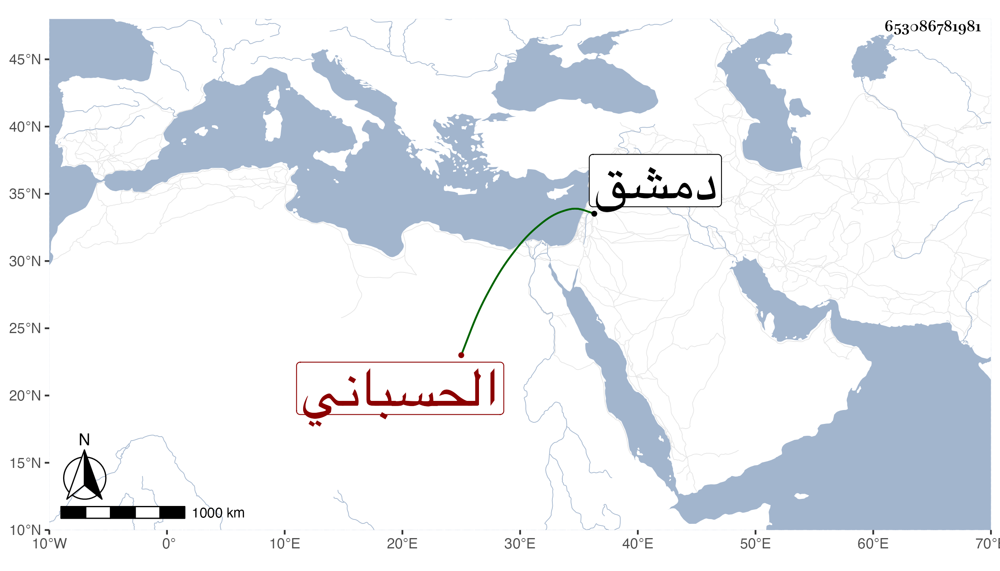

0902Sakhawi.DawLamic.ITO20230111-ara1.EIS1600.653086781981
Biography ID: 653086781981
الحسباني بضم المهملة نسبة لحسبان من دمشق الشهاب أحمد بن العماد اسمعيل ابن خليفة وآخر اسمه الزين أبو هريرة عبد الرحمن بن الشهاب أحمد بن الجلال أبي عبد الله محمد استقر في قضاء الحنفية بدمشق في أواخر سنة إحدى وتسعين وذكر بفقه في الجملة مع إهماله وقبله بنحو شهر استقر ابنه الأمين أبو السعادات محمد في كتابة سرها .
